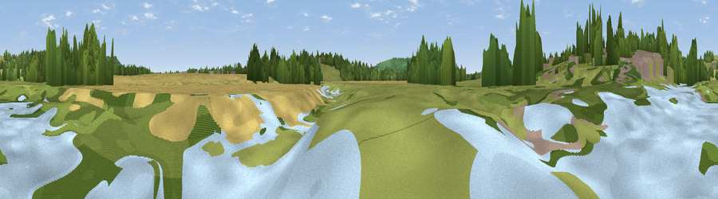

Viewpoint near Fladbury
#43180 in England · top 96% of its area beats it · near FladburyWhere it is
The exact computed spot (SO 99796 45973). Click the marker for map links.
The view, rendered

A 360° render of this exact spot computed from the terrain model, tree cover and land cover — summer colours, afternoon light, calibrated against photographs of famous viewpoints. Real trees, hedges and buildings will differ in detail.
The panorama
Grey silhouette: terrain skyline in each direction (720 bearings, Earth curvature and refraction included). Dashed green: skyline with trees (+15 m) and buildings (+8 m) as obstacles. Blue strip: how far the ground is visible on each bearing.
Where the view opens
Wedge length = distance to the farthest visible ground on that bearing (vegetation-aware). Rings at 10, 25 and 50 km.
What fills the view
41% grassland · 34% woodland · 18% cropland · 4% built-up · 2% water
Angular shares of the visible panorama (visual magnitude), not map area. Landscape diversity 0.54 (0–1 Shannon).
Key numbers
More beautiful places nearby
The staircase of upgrades: each row has a higher view potential than everything closer. Driving times are estimates from straight-line distance, calibrated against real road routing — check an actual route before setting out.
| Place | Direction | Drive | Score |
|---|---|---|---|
| Viewpoint near Fladbury | N · 1 km | ~3 min | 34.8 |
| Viewpoint near Fladbury | N · 2 km | ~4 min | 61.4 |
| Viewpoint near Lenchwick | NE · 2 km | ~6 min | 65.2 |
| Viewpoint near Elmley Castle | SSW · 5 km | ~12 min | 76.9 |
| Viewpoint near Elmley Castle | SSW · 7 km | ~14 min | 79.5 |
| Viewpoint near Elmley Castle | SSW · 7 km | ~14 min | 80.5 |
| Bredon Hill | SW · 7 km | ~14 min | 83.0 |
| North Hill | W · 23 km | ~38 min | 86.8 |
52.11208, -2.00440 · source: osm viewpoint · position refined by local search. Computed location — check access rights before visiting.